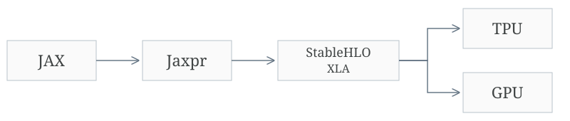
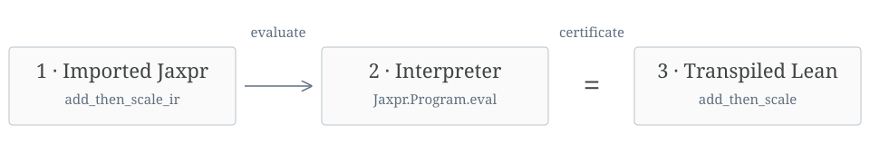

Provably Correct Tensor Puzzles
A couple of years ago, @jxmnop talked me into writing a collection of tensor puzzles. Over time, they have become popular job interview prep for wannabe MsTS. The puzzles give the user a specification written as easy-to-read Python and ask them to generate a vectorized implementation.
def loop_cumsum(a):
out = jnp.zeros_like(a)
total = 0.
for i in range(a.shape[0]):
total = total + a[i]
out = out.at[i].set(total)
return out@jax.jit
def puzzle_cumsum(a):
i = arange(a.shape[0])
return jnp.sum(jnp.where(i[:, None] >= i[None, :], a[None, :], 0.), axis=1)Recently, I have been thinking about formally verification and envisioning what it might look like for every day coders. This seemed like a good place to start. In this blog, we walkthrough how to do prove puzzle correct, and build a library for proving properties of arbitrary JAX code, srush/jax-lean. It was inspired by conversations with pmocz, nielstron, and these projects:
The code and proofs are written by AI; the writing is human. This is a follow-up to Lean-Verified Transformers.
Background: JAX IR
JAX is a numerical transformation system that utilizes a nearly one-to-one NumPy interface. While the primary use of JAX is machine learning, the core framework has remained impressively ML-agnostic. Instead, it focuses on a core set of transformations that can be reduced to simple numerical operations.
JAX is also a magic trick. The user thinks they are writing Python, while actually it is pulling out code using a minimal core of numerical operations. Proving properties of Python is nearly impossible, but proofs using this intermediate representation are more tractable.
If you are interested in the details of how JAX works, they have an amazing tutorial known as Autodidax. Here, we will just briefly outline the process.
Let's begin with a simple function that adds two vectors and multiplies the result by 2.
def add_then_scale(a, b):
total = a + b
return total * 2.0When we run this Python code, JAX is tracing the path and producing its own representation of what operations were called.
a = jnp.array([1., 2., 3.], dtype=jnp.float32)
b = jnp.array([4., 5., 6.], dtype=jnp.float32)
print(jax.make_jaxpr(add_then_scale)(a, b))

The intermediate representation is known as Jaxpr. It lives between your Python code and the final lower-level representations that execute the mathematical operations on hardware.
One day, we hope to have specs all the way down to the GPU. However, we are going to focus on this Jaxpr level and assume everything below roughly follows what it says. This is a horrible assumption for ML code, as numerical precision is of huge importance. Hopefully, we can cover this in future blogs.
Let's look at the Jaxpr output from our function. It should look familiar. It takes two arguments: float32 vectors of size 3. It adds them into a temporary variable, multiplies it by 2, and returns the result.
{ lambda ; a:f32[3] b:f32[3]. let
c:f32[3] = add a b
d:f32[3] = mul c 2.0:f32[]
in (d,) }
Of course, this code will get more complex with more realistic examples. There is a set of operations that specify the core numerical transformations needed. The core idea, though, is that it will remain a sequence of these operations, without loops or other control flow.
def eye(n):
i = arange(n)
return jnp.where(i[:, None] == i[None, :], 1., 0.)print(jax.make_jaxpr(eye, static_argnums=(0,))(3))
print(eye(3))
{ lambda ; . let
a:f32[3] = iota[dimension=0 dtype=float32 shape=(3,) sharding=None]
b:f32[3,1] = broadcast_in_dim[
broadcast_dimensions=(0,)
shape=(3, 1)
sharding=None
] a
c:f32[1,3] = broadcast_in_dim[
broadcast_dimensions=(1,)
shape=(1, 3)
sharding=None
] a
d:bool[3,3] = eq b c
e:f32[3,3] = jit[
name=_where
jaxpr={ lambda ; d:bool[3,3] f:f32[] g:f32[]. let
h:f32[3,3] = broadcast_in_dim[
broadcast_dimensions=()
shape=(3, 3)
sharding=None
] f
i:f32[3,3] = broadcast_in_dim[
broadcast_dimensions=()
shape=(3, 3)
sharding=None
] g
e:f32[3,3] = select_n d i h
in (e,) }
] d 1.0:f32[] 0.0:f32[]
in (e,) }
[[1. 0. 0.]
[0. 1. 0.]
[0. 0. 1.]]
Transpilation to Lean

Our strategy to prove the correctness of this code is to transpile it over to Lean and then write proofs for the Lean version of the code. We do this with three Lean modules.
- A mapping of the low-level Jaxpr
- An implementation of a Jaxpr interpreter
- A mapping of the high-level Jaxpr code.
If we trust our Jaxpr interpreter, we can then prove things about our JAX code in Lean and then prove that those properties also apply to the original Python code.
Let's walk through each of the steps.
First, we are going to map over the Jaxpr from the first section to Lean. Lean has a powerful macro system, so we can make the mapping look nearly identical to the original representation. We follow the specified syntax of the original, propagating forward some additional guarantees about bounds and dimensions.
def add_then_scale_ir : Jaxpr.Program [(.real, [3]), (.real, [3])] (.real, [3]) :=
jaxpr% (a : (.real, [3]), b : (.real, [3])) {
c : (.real, [3]) := .add a b (t := [3]);
d : (.real, [3]) := .mul c (.literal (2) 1 (c:Jaxpr.Atom [(Jaxpr.DType.real, [3]), (Jaxpr.DType.real, [3]), (Jaxpr.DType.real, [3])] (Jaxpr.DType.real, [3]) := Jaxpr.Atom.var Jaxpr.Var.here⊢ 0 < 1 All goals completed! 🐙)) (t := [3]);
return d
}Next, we need an implementation of the Jaxpr IR in Lean. As far as I know, there is not a formal specification of this language, but each part is well documented. In a more realistic setting, we would want to match the lower-level instructions exactly.
In addition to trusting that this interpreter matches Jaxpr, we are also going to relax the floating-point challenges at this stage. Our interpreter will just pretend things work like the reals.
noncomputable def Program.eval (env : Env ctx) : Program ctx t → Value t
| .ret x => x.eval env
| .bind op rest =>
let value := op.eval env
let next := Env.cons value env
rest.eval next
| .call body args rest =>
let value := body.eval (args.eval env)
let next := Env.cons value env
rest.eval next | .add x y left right _ =>
let xv := x.eval env
let yv := y.eval env
fun i => DType.add _ (xv (broadcastIndex _ _ _ left i)) (yv (broadcastIndex _ _ _ right i))Given the source of truth of the Jaxpr representation, we can now transpile the Jaxpr into something that is a bit more readable. This will look kind of like a line-aligned Lean implementation of the original code. Since this code will not be executed, we can apply transformations to make it a bit easier to use for our proofs (for instance, see the variance example below).
def add_then_scale {R : Type} [Field R] (x0 : Tensor R [3]) (x1 : Tensor R [3]) : Tensor R [3] :=
-- add
let v0 : Tensor R [3] := Tensor.map₂ (fun a0 a1 => a0 + a1) x0 x1
-- mul
let v1 : Tensor R [3] := Tensor.map (fun a0 => a0 * ((Tensor.scalar (2 : R)) ())) v0
v1Since this implementation is generated, we shouldn't trust that it is correct. We therefore need to actually prove this. The following theorem shows that the code matches its IR.
-- Relative to Jaxpr.Program.eval's real-arithmetic semantics, for every input.
set_option linter.unusedSimpArgs false in
theorem add_then_scale_translation_correct (x0 : Tensor ℝ [3]) (x1 : Tensor ℝ [3]) :
Jaxpr.Program.eval (.cons x0 (.cons x1 .nil)) _root_.JaxLean.Blog.add_then_scale_ir = _root_.JaxLean.Blog.add_then_scale (R := ℝ) x0 x1 := x0:Tensor ℝ [3]x1:Tensor ℝ [3]⊢ Jaxpr.Program.eval (Jaxpr.Env.cons x0 (Jaxpr.Env.cons x1 Jaxpr.Env.nil)) add_then_scale_ir = add_then_scale x0 x1
x0:Tensor ℝ [3]x1:Tensor ℝ [3]i:Index (Jaxpr.DType.real, [3]).2⊢ Jaxpr.Program.eval (Jaxpr.Env.cons x0 (Jaxpr.Env.cons x1 Jaxpr.Env.nil)) add_then_scale_ir i = add_then_scale x0 x1 i
x0:Tensor ℝ [3]x1:Tensor ℝ [3]j0:Fin 3⊢ Jaxpr.Program.eval (Jaxpr.Env.cons x0 (Jaxpr.Env.cons x1 Jaxpr.Env.nil)) add_then_scale_ir (j0, PUnit.unit) =
add_then_scale x0 x1 (j0, PUnit.unit)
All goals completed! 🐙If we can complete each of these three steps, we know that we have passed the implementation across the language barrier. Our implementation does this for most of the core Jaxpr IR with the assumption that we are working with the reals. From here on out, we can assume we are working with implementations in the proof language Lean.
Puzzle Proofs
We can now go back to the puzzles.
We consider an example of the original outer puzzle, which
asks the user to produce the outer product of two vectors.
Here's the original code and the transpiled Lean.
@jax.jit
def puzzle_outer(a, b):
return a[:, None] * b[None, :]def puzzle_outer {R : Type} [Field R] (a : Tensor R [2]) (b : Tensor R [3]) : Tensor R [2, 3] :=
-- code.py:20 (puzzle_outer)
-- broadcast_in_dim
let broadcast_in_dim_result : Tensor R [2, 1] := Tensor.reindex (s := [2]) (fun i => (i.1, ())) a
-- code.py:20 (puzzle_outer)
-- broadcast_in_dim
let broadcast_in_dim_result_2 : Tensor R [1, 3] := Tensor.reindex (s := [3]) (fun i => (i.2.1, ())) b
-- code.py:20 (puzzle_outer)
-- mul
let mul_result : Tensor R [2, 3] := Tensor.map₂ (fun a0 a1 => a0 * a1) (fun i => (broadcast_in_dim_result (i.1, 0, ()))) (Tensor.broadcastFirst 2 broadcast_in_dim_result_2)
mul_resultIn a similar way, we convert the loop version to Lean. This one is a bit long since JAX unrolls the loop to a sequence of instructions, so I am omitting the Lean code.
def loop_outer(a, b):
out = jnp.zeros((a.shape[0], b.shape[0]), dtype=a.dtype)
for i in range(a.shape[0]):
for j in range(b.shape[0]):
out = out.at[i, j].set(a[i] * b[j])
return outThe goal is to certify that this produces the same output as the vectorized version. Once we are in Lean, proving this kind of thing is actually relatively straightforward. The code below automatically converts the broadcasting operations into expanded cases and enumerates all 2 × 3 cases to check that they produce the same result as the loop.
theorem outer_matches_loop (a : Tensor ℝ [2]) (b : Tensor ℝ [3]) :
puzzle_outer a b = loop_outer a b := a:Tensor ℝ [2]b:Tensor ℝ [3]⊢ puzzle_outer a b = loop_outer a b
a:Tensor ℝ [2]b:Tensor ℝ [3]i:Index [2, 3]⊢ puzzle_outer a b i = loop_outer a b i
a:Tensor ℝ [2]b:Tensor ℝ [3]i:Fin 2j:Fin 3⊢ puzzle_outer a b (i, j, PUnit.unit) = loop_outer a b (i, j, PUnit.unit)
a:Tensor ℝ [2]b:Tensor ℝ [3]j:Fin 3⊢ puzzle_outer a b ((fun i => i) ⟨0, ⋯⟩, j, PUnit.unit) = loop_outer a b ((fun i => i) ⟨0, ⋯⟩, j, PUnit.unit)a:Tensor ℝ [2]b:Tensor ℝ [3]j:Fin 3⊢ puzzle_outer a b ((fun i => i) ⟨1, ⋯⟩, j, PUnit.unit) = loop_outer a b ((fun i => i) ⟨1, ⋯⟩, j, PUnit.unit) a:Tensor ℝ [2]b:Tensor ℝ [3]j:Fin 3⊢ puzzle_outer a b ((fun i => i) ⟨0, ⋯⟩, j, PUnit.unit) = loop_outer a b ((fun i => i) ⟨0, ⋯⟩, j, PUnit.unit)a:Tensor ℝ [2]b:Tensor ℝ [3]j:Fin 3⊢ puzzle_outer a b ((fun i => i) ⟨1, ⋯⟩, j, PUnit.unit) = loop_outer a b ((fun i => i) ⟨1, ⋯⟩, j, PUnit.unit) a:Tensor ℝ [2]b:Tensor ℝ [3]⊢ puzzle_outer a b ((fun i => i) ⟨1, ⋯⟩, (fun i => i) ⟨0, ⋯⟩, PUnit.unit) =
loop_outer a b ((fun i => i) ⟨1, ⋯⟩, (fun i => i) ⟨0, ⋯⟩, PUnit.unit)a:Tensor ℝ [2]b:Tensor ℝ [3]⊢ puzzle_outer a b ((fun i => i) ⟨1, ⋯⟩, (fun i => i) ⟨1, ⋯⟩, PUnit.unit) =
loop_outer a b ((fun i => i) ⟨1, ⋯⟩, (fun i => i) ⟨1, ⋯⟩, PUnit.unit)a:Tensor ℝ [2]b:Tensor ℝ [3]⊢ puzzle_outer a b ((fun i => i) ⟨1, ⋯⟩, (fun i => i) ⟨2, ⋯⟩, PUnit.unit) =
loop_outer a b ((fun i => i) ⟨1, ⋯⟩, (fun i => i) ⟨2, ⋯⟩, PUnit.unit) a:Tensor ℝ [2]b:Tensor ℝ [3]⊢ puzzle_outer a b ((fun i => i) ⟨0, ⋯⟩, (fun i => i) ⟨0, ⋯⟩, PUnit.unit) =
loop_outer a b ((fun i => i) ⟨0, ⋯⟩, (fun i => i) ⟨0, ⋯⟩, PUnit.unit)a:Tensor ℝ [2]b:Tensor ℝ [3]⊢ puzzle_outer a b ((fun i => i) ⟨0, ⋯⟩, (fun i => i) ⟨1, ⋯⟩, PUnit.unit) =
loop_outer a b ((fun i => i) ⟨0, ⋯⟩, (fun i => i) ⟨1, ⋯⟩, PUnit.unit)a:Tensor ℝ [2]b:Tensor ℝ [3]⊢ puzzle_outer a b ((fun i => i) ⟨0, ⋯⟩, (fun i => i) ⟨2, ⋯⟩, PUnit.unit) =
loop_outer a b ((fun i => i) ⟨0, ⋯⟩, (fun i => i) ⟨2, ⋯⟩, PUnit.unit)a:Tensor ℝ [2]b:Tensor ℝ [3]⊢ puzzle_outer a b ((fun i => i) ⟨1, ⋯⟩, (fun i => i) ⟨0, ⋯⟩, PUnit.unit) =
loop_outer a b ((fun i => i) ⟨1, ⋯⟩, (fun i => i) ⟨0, ⋯⟩, PUnit.unit)a:Tensor ℝ [2]b:Tensor ℝ [3]⊢ puzzle_outer a b ((fun i => i) ⟨1, ⋯⟩, (fun i => i) ⟨1, ⋯⟩, PUnit.unit) =
loop_outer a b ((fun i => i) ⟨1, ⋯⟩, (fun i => i) ⟨1, ⋯⟩, PUnit.unit)a:Tensor ℝ [2]b:Tensor ℝ [3]⊢ puzzle_outer a b ((fun i => i) ⟨1, ⋯⟩, (fun i => i) ⟨2, ⋯⟩, PUnit.unit) =
loop_outer a b ((fun i => i) ⟨1, ⋯⟩, (fun i => i) ⟨2, ⋯⟩, PUnit.unit) All goals completed! 🐙We combine this with the proof that the Jaxpr matches the above functions. We now have a full proof that the puzzle was correct!
All goals completed! 🐙Verified Properties
Of course, just proving the correctness of puzzles is not that useful. Things become more interesting when we want to complete arbitrary ad hoc proofs about our code. To illustrate roughly what this might look like, let's walk through a few properties and look at:
- The JAX code
- The spec to prove
- An example of the proof (that an LLM might write for us)
Transformer Properties
Recently, I wrote a blog post on Lean-Verified Transformers that implemented several equivariance properties of transformers directly in Lean. We probably don't want to write the code in Lean, so we can write it in JAX and transpile it over.
We first define equivariance as:
The goal is to prove that a transformer without positional encoding is position-equivariant. We start with the transformer block in JAX.
@jax.jit
def transformer_block(x, weight, wq, wk, wv):
h = forward(x, weight)
q = project(h, wq)
k = project(h, wk)
v = project(h, wv)
return attention(q, k, v)A proof of part of this property would look like this.
All goals completed! 🐙And then we can propagate this through the whole stack.
theorem transformer_block_permute (perm : Fin 3 ≃ Fin 3)
(x : Matrix 3 2) (weight wq wk wv : Matrix 2 2) :
transformer_block (selectRows perm x) weight wq wk wv =
selectRows perm (transformer_block x weight wq wk wv)Norm Clipping
Let's consider another simple, but common, example in ML. We want to guarantee that, after applying norm clipping in our code, we arrive at a gradient norm that is at most our fixed bound.
def norm_clip(x, radius):
# The theorem requires radius > 0, so zero vectors have a safe denominator.
return x * (radius / jnp.maximum(radius, jnp.linalg.norm(x)))The goal here is to obtain the following certificate.
theorem norm_clip_bound (x : Tensor ℝ [3]) (r : ℝ) (hr : 0 < r) :
Tensor.vectorNorm (norm_clip x (Tensor.scalar r)) ≤ min r (Tensor.vectorNorm x)For a simple example, this is a mechanical calculation. But if you imagine an optimized implementation, we would need to push this through the whole neural network.
theorem l2_clipL2_le (r : ℝ) (hr : 0 < r) (x : ι → ℝ) :
l2 (clipL2 r x) ≤ min r (l2 x) := by
have hd : 0 < max r (l2 x) := lt_of_lt_of_le hr (le_max_left _ _)
have ha : 0 ≤ r / max r (l2 x) := div_nonneg hr.le hd.le
change l2 (fun i => x i * (r / max r (l2 x))) ≤ _
rw [l2_scale, abs_of_nonneg ha]
apply le_min
· calc
_ ≤ (r / max r (l2 x)) * max r (l2 x) :=
mul_le_mul_of_nonneg_left (le_max_right _ _) ha
_ = r := div_mul_cancel₀ _ (ne_of_gt hd)
· calc
_ ≤ 1 * l2 x := mul_le_mul_of_nonneg_right
((div_le_one hd).mpr (le_max_left _ _)) (l2_nonneg x)
_ = _ := one_mul _Physics
As a final example, we can consider the use of JAX for non-ML projects. The inspiration for this blog is the Noether project, which aimed to guarantee similar properties of mathematical code. The motivating example is conservation of properties through code.
def burgers(u, lam):
flux = 0.5 * u**2
return u - lam * (flux - jnp.roll(flux, 1))The conservation law can be written with the following guarantee, which propagates through the system.
theorem burgers_conserves_sum (u : Tensor ℝ [4]) (lam : Tensor ℝ []) :
(∑ i : Fin 4, Burgers.burgers u lam (i, ())) = ∑ i : Fin 4, u (i, ())theorem burgers_spec (u : Tensor ℝ [4]) (lam : Tensor ℝ []) :
Burgers.burgers u lam = fluxStep neighbor (fun z => lam () * (1 / 2 * z ^ 2)) u := u:Tensor ℝ [4]lam:Tensor ℝ []⊢ Burgers.burgers u lam = fluxStep neighbor (fun z => lam () * (1 / 2 * z ^ 2)) u
u:Tensor ℝ [4]lam:Tensor ℝ []⊢ map₂ (fun a0 a1 => a0 - a1) u
(map (fun a0 => lam () * a0)
(map₂ (fun a0 a1 => a0 - a1) (map (fun a0 => scalar (1 / 2) () * a0) (map (fun x => x ^ 2) u))
(permute neighbor (map (fun a0 => scalar (1 / 2) () * a0) (map (fun x => x ^ 2) u))))) =
fluxStep neighbor (fun z => lam () * (1 / 2 * z ^ 2)) u
u:Tensor ℝ [4]lam:Tensor ℝ []i:Index [4]⊢ map₂ (fun a0 a1 => a0 - a1) u
(map (fun a0 => lam () * a0)
(map₂ (fun a0 a1 => a0 - a1) (map (fun a0 => scalar (1 / 2) () * a0) (map (fun x => x ^ 2) u))
(permute neighbor (map (fun a0 => scalar (1 / 2) () * a0) (map (fun x => x ^ 2) u)))))
i =
fluxStep neighbor (fun z => lam () * (1 / 2 * z ^ 2)) u i
u:Tensor ℝ [4]lam:Tensor ℝ []i:Index [4]⊢ u i - lam () * (1 / 2 * u i ^ 2 - 1 / 2 * u (neighbor i.1, ()) ^ 2) =
u i - (lam () * (1 / 2 * u i ^ 2) - lam () * (1 / 2 * u (neighbor i.1, ()) ^ 2))
All goals completed! 🐙Extension: Variance
One thing that I have personally wanted for years is better guarantees for code that uses sampling, such as RL. Techniques like probabilistic programming provide these, but are not typically used in scaled systems. One solution might be to implement the JAX code as is and prove that it matches a clean spec for its probabilistic properties.
As a simple example, let us imagine doing Monte Carlo sampling that takes 16 samples of a die roll. We would like to establish the variance of our estimator.
The code itself will just be an imperative sampling implementation in JAX.
def die_draw(key):
return jax.random.randint(key, (), 1, 7).astype(jnp.float32)def die_estimate(draws):
return jnp.mean(draws)def mc_die_16(key):
keys = jax.random.split(key, 16)
return die_estimate(jax.vmap(die_draw)(keys))The Lean theorem will be like the math above.
theorem mc_die_variance : (mc_die_16 (R := ℝ)).variance = 35 / 192In this case, the proof just propagates the variance through the operations.
Derivatives and Mathlib
As a final example, let's consider how these proofs might actually interact with all the work going on in formalizing mathematics. This is a toy example where we verify that the real-valued version of our JAX code produces the mathematically correct gradient.
For deeper examples of this, see the text on Verified Deep Learning with Lean 4.
We first define the function in JAX and then perform autodiff in the standard JAX manner to create a function for its derivative.
def quadratic(x):
return x * x + 3.0 * xdef gradient(x):
return jax.grad(quadratic)(x)JAX will then lower the new function to Jaxpr that we can apply our method to. It goes through the conversion to Lean in the standard way.
{ lambda ; a:f32[]. let
b:f32[] = mul a a
c:f32[] = mul 3.0:f32[] a
_:f32[] = add b c
d:f32[] = mul 3.0:f32[] 1.0:f32[]
e:f32[] = mul a 1.0:f32[]
f:f32[] = add_any d e
g:f32[] = mul 1.0:f32[] a
h:f32[] = add_any f g
in (h,) }
There are many things we might prove here, but to keep things simple
let's just get a certificate that the autodiff Jaxpr is equivalent to the
mathematical derivative of the original function. We are using mathlib
here with the deriv operator to produce that function directly.
theorem gradient_correct (x : ℝ) :
gradient (Tensor.scalar x) () =
deriv (fun y : ℝ => quadratic (Tensor.scalar y) ()) x
theorem quadratic_hasDerivAt (x : ℝ) :
HasDerivAt (fun y : ℝ => quadratic (Tensor.scalar y) ()) (2 * x + 3) x := x:ℝ⊢ HasDerivAt (fun y => quadratic (Tensor.scalar y) ()) (2 * x + 3) x
x:ℝh:HasDerivAt (fun y => y * y + 3 * y) (1 * x + x * 1 + 3 * 1) x⊢ HasDerivAt (fun y => quadratic (Tensor.scalar y) ()) (2 * x + 3) x
x:ℝh:HasDerivAt (fun y => y * y + 3 * y) (1 * x + x * 1 + 3 * 1) x⊢ (fun y => quadratic (Tensor.scalar y) ()) = fun y => y * y + 3 * yx:ℝh:HasDerivAt (fun y => y * y + 3 * y) (1 * x + x * 1 + 3 * 1) x⊢ 2 * x + 3 = 1 * x + x * 1 + 3 * 1 x:ℝh:HasDerivAt (fun y => y * y + 3 * y) (1 * x + x * 1 + 3 * 1) x⊢ (fun y => quadratic (Tensor.scalar y) ()) = fun y => y * y + 3 * yx:ℝh:HasDerivAt (fun y => y * y + 3 * y) (1 * x + x * 1 + 3 * 1) x⊢ 2 * x + 3 = 1 * x + x * 1 + 3 * 1 x:ℝh:HasDerivAt (fun y => y * y + 3 * y) (1 * x + x * 1 + 3 * 1) x⊢ 2 * x = x + x x:ℝh:HasDerivAt (fun y => y * y + 3 * y) (1 * x + x * 1 + 3 * 1) x⊢ 2 * x = x + x All goals completed! 🐙Conclusion
This library provides a working implementation of the conversion between JAX and Lean with the ability to write non-trivial proofs. This is meant as a glance at what fully verifiable ML might allow for checking core properties like faithfulness, numerical stability, and statistical correctness. However, there is still lots to do here, including dealing with numerical precision, distributed components, making certificates more readable, and handling the devex of changing code and proofs. As in many areas, the future here will be quite unpredictable.